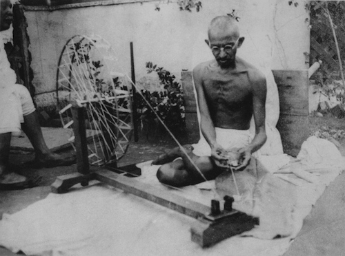
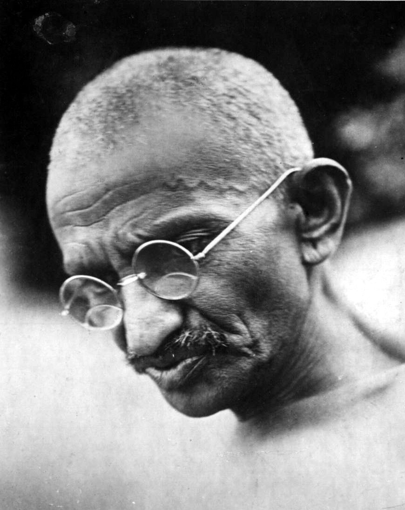

The Struggle for Indian Independence
Introduction
At the request of Gokhale, conveyed to him by C.F. Andrews, Gandhi returned to India in 1915. He brought an international reputation as a leading Indian nationalist, theorist and organiser. He joined the Indian National Congress and was introduced to Indian issues, politics and the Indian people primarily by Gopal Krishna Gokhale. Gokhale was a key leader of the Congress Party best known for his restraint and moderation, and his insistence on working inside the system. Gandhi took Gokhale's liberal approach based on British Whiggish traditions and transformed it to make it look wholly Indian.
Gandhi took leadership of the Congress in 1920 and began escalating demands until on 26 January 1930 the Indian National Congress declared the independence of India. The British did not recognise the declaration but negotiations ensued, with the Congress taking a role in provincial government in the late 1930s. Gandhi and the Congress withdrew their support of the Raj when the Viceroy declared war on Germany in September 1939 without consultation. Tensions escalated until Gandhi demanded immediate independence in 1942 and the British responded by imprisoning him and tens of thousands of Congress leaders. Meanwhile, the Muslim League did co-operate with Britain and moved, against Gandhi's strong opposition, to demands for a totally separate Muslim state of Pakistan. In August 1947 the British partitioned the land with India and Pakistan each achieving independence on terms that Gandhi disapproved.
Role in World War I
In April 1918, during the latter part of World War I, the Viceroy invited Gandhi to a War Conference in Delhi. Perhaps to show his support for the Empire and help his case for India's independence, Gandhi agreed to actively recruit Indians for the war effort. In contrast to the Zulu War of 1906 and the outbreak of World War I in 1914, when he recruited volunteers for the Ambulance Corps, this time Gandhi attempted to recruit combatants. In a June 1918 leaflet entitled "Appeal for Enlistment", Gandhi wrote "To bring about such a state of things we should have the ability to defend ourselves, that is, the ability to bear arms and to use them...If we want to learn the use of arms with the greatest possible despatch, it is our duty to enlist ourselves in the army." He did, however, stipulate in a letter to the Viceroy's private secretary that he "personally will not kill or injure anybody, friend or foe."
Gandhi's war recruitment campaign brought into question his consistency on nonviolence. Gandhi's private secretary noted that "The question of the consistency between his creed of 'Ahimsa' (nonviolence) and his recruiting campaign was raised not only then but has been discussed ever since."
Champaran and Kheda
Gandhi's first major achievements came in 1918 with the Champaran and Kheda agitations of Bihar and Gujarat. The Champaran agitation pitted the local peasantry against their largely British landlords who were backed by the local administration. The peasantry was forced to grow Indigo, a cash crop whose demand had been declining over two decades, and were forced to sell their crops to the planters at a fixed price. Unhappy with this, the peasantry appealed to Gandhi at his ashram in Ahmedabad. Pursuing a strategy of nonviolent protest, Gandhi took the administration by surprise and won concessions from the authorities.
In 1918, Kheda was hit by floods and famine and the peasantry was demanding relief from taxes. Gandhi moved his headquarters to Nadiad, organising scores of supporters and fresh volunteers from the region, the most notable being Vallabhbhai Patel. Using non-co-operation as a technique, Gandhi initiated a signature campaign where peasants pledged non-payment of revenue even under the threat of confiscation of land. A social boycott of mamlatdars and talatdars (revenue officials within the district) accompanied the agitation. Gandhi worked hard to win public support for the agitation across the country. For five months, the administration refused but finally in end-May 1918, the Government gave way on important provisions and relaxed the conditions of payment of revenue tax until the famine ended. In Kheda, Vallabhbhai Patel represented the farmers in negotiations with the British, who suspended revenue collection and released all the prisoners.
Khilafat Movement
In 1919, Gandhi, with his weak position in Congress, decided to broaden his political base by increasing his appeal to Muslims. The opportunity came in the form of the Khilafat movement, a worldwide protest by Muslims against the collapsing status of the Caliph, the leader of their religion. The Ottoman Empire had lost the First World War and was dismembered, as Muslims feared for the safety of the holy places and the prestige of their religion. Although Gandhi did not originate the All-India Muslim Conference, which directed the movement in India, he soon became its most prominent spokesman and attracted a strong base of Muslim support with local chapters in all Muslim centres in India. As a mark of solidarity with Indian Muslims he returned the medals that had been bestowed on him by the British government for his work in the Boer and Zulu Wars. He believed that the British government was not being honest in its dealings with Muslims on the Khilafat issue. His success made him India's first national leader with a multicultural base and facilitated his rise to power within Congress, which had previously been unable to influence many Indian Muslims. In 1920 Gandhi became a major leader in Congress. By the end of 1922 the Khilafat movement had collapsed.
Gandhi always fought against "communalism", which pitted Muslims against Hindus in Indian politics, but he could not reverse the rapid growth of communalism after 1922. Deadly religious riots broke out in numerous cities, including 91 in Uttar Pradesh alone. At the leadership level, the proportion of Muslims among delegates to Congress fell sharply, from 11% in 1921 to under 4% in 1923.
Non-co-operation
In his famous book Hind Swaraj (1909) Gandhi declared that British rule was established in India with the co-operation of Indians and had survived only because of this co-operation. If Indians refused to co-operate, British rule would collapse and swaraj would come.
With Congress now behind him in 1920, Gandhi had the base to employ non-co-operation, nonviolence and peaceful resistance as his "weapons" in the struggle against the British Raj. His wide popularity among both Hindus and Muslims made his leadership possible; he even convinced the extreme faction of Muslims to support peaceful non-co-operation. The spark that ignited a national protest was overwhelming anger at the Jallianwala Bagh massacre (or Amritsar massacre) of hundreds of peaceful civilians by British troops in Punjab. Many Britons celebrated the action as needed to prevent another violent uprising similar to the Rebellion of 1857, an attitude that caused many Indian leaders to decide the Raj was controlled by their enemies. Gandhi criticised both the actions of the British Raj and the retaliatory violence of Indians. He authored the resolution offering condolences to British civilian victims and condemning the riots which, after initial opposition in the party, was accepted following Gandhi's emotional speech advocating his principle that all violence was evil and could not be justified.
After the massacre and subsequent violence, Gandhi began to focus on winning complete self-government and control of all Indian government institutions, maturing soon into Swaraj or complete individual, spiritual, political independence. During this period, Gandhi claimed to be a "highly orthodox Hindu" and in January 1921 during a speech at a temple in Vadtal, he spoke of the relevance of non-co-operation to Hindu Dharma, "At this holy place, I declare, if you want to protect your 'Hindu Dharma', non-cooperation is first as well as the last lesson you must learn up."
In December 1921, Gandhi was invested with executive authority on behalf of the Indian National Congress. Under his leadership, the Congress was reorganised with a new constitution, with the goal of Swaraj. Membership in the party was opened to anyone prepared to pay a token fee. A hierarchy of committees was set up to improve discipline, transforming the party from an elite organisation to one of mass national appeal. Gandhi expanded his nonviolence platform to include the swadeshi policy—the boycott of foreign-made goods, especially British goods. Linked to this was his advocacy that khadi (homespun cloth) be worn by all Indians instead of British-made textiles. Gandhi exhorted Indian men and women, rich or poor, to spend time each day spinning khadi in support of the independence movement.
Gandhi even invented a small, portable spinning wheel that could be folded into the size of a small typewriter. This was a strategy to inculcate discipline and dedication to weeding out the unwilling and ambitious and to include women in the movement at a time when many thought that such activities were not respectable activities for women. In addition to boycotting British products, Gandhi urged the people to boycott British educational institutions and law courts, to resign from government employment, and to forsake British titles and honours.
"Non-cooperation" enjoyed widespread appeal and success, increasing excitement and participation from all strata of Indian society. Yet, just as the movement reached its apex, it ended abruptly as a result of a violent clash in the town of Chauri Chaura, Uttar Pradesh, in February 1922. Fearing that the movement was about to take a turn towards violence, and convinced that this would be the undoing of all his work, Gandhi called off the campaign of mass civil disobedience. This was the third time that Gandhi had called off a major campaign. Gandhi was arrested on 10 March 1922, tried for sedition, and sentenced to six years' imprisonment. He began his sentence on 18 March 1922. He was released in February 1924 for an appendicitis operation, having served only two years.
Without Gandhi's unifying personality, the Indian National Congress began to splinter during his years in prison, splitting into two factions, one led by Chitta Ranjan Das and Motilal Nehru favouring party participation in the legislatures, and the other led by Chakravarti Rajagopalachari and Sardar Vallabhbhai Patel, opposing this move. Furthermore, co-operation among Hindus and Muslims, which had been strong at the height of the nonviolence campaign, was breaking down. Gandhi attempted to bridge these differences through many means, including a three-week fast in the autumn of 1924, but with limited success. In this year, Gandhi was persuaded to preside over the Congress session to be held in Belgaum. Gandhi agreed to become president of the session on one condition: that Congressmen should take to wearing homespun khadi. In his long political career, this was the only time when he presided over a Congress session.
Salt Satyahraha (Salt March)
Gandhi stayed out of active politics and, as such, the limelight for most of the 1920s. He focused instead on resolving the wedge between the Swaraj Party and the Indian National Congress, and expanding initiatives against untouchability, alcoholism, ignorance, and poverty. He returned to the fore in 1928. In the preceding year, the British government had appointed a new constitutional reform commission under Sir John Simon, which did not include any Indian as its member. The result was a boycott of the commission by Indian political parties. Gandhi pushed through a resolution at the Calcutta Congress in December 1928 calling on the British government to grant India dominion status or face a new campaign of non-co-operation with complete independence for the country as its goal. Gandhi had not only moderated the views of younger men like Subhas Chandra Bose and Jawaharlal Nehru, who sought a demand for immediate independence, but also reduced his own call to a one-year wait, instead of two.
The British did not respond. On 31 December 1929, the flag of India was unfurled in Lahore. 26 January 1930 was celebrated as India's Independence Day by the Indian National Congress meeting in Lahore. This day was commemorated by almost every other Indian organisation. Gandhi then launched a new Satyagraha against the tax on salt in March 1930. This was highlighted by the famous Salt March to Dandi from 12 March to 6 April, where he marched 388 kilometres (241 mi) from Ahmedabad to Dandi, Gujarat to make salt himself. Thousands of Indians joined him on this march to the sea. This campaign was one of his most successful at upsetting British hold on India; Britain responded by imprisoning over 60,000 people.
Women
Gandhi strongly favoured the emancipation of women, and he went so far as to say that "the women have come to look upon me as one of themselves." He opposed purdah, child marriage, untouchability, and the extreme oppression of Hindu widows, up to and including sati. He especially recruited women to participate in the salt tax campaigns and the boycott of foreign products. Sarma concludes that Gandhi's success in enlisting women in his campaigns, including the salt tax campaign, the anti-untouchability campaign and the peasant movement, gave many women a new self-confidence and dignity in the mainstream of Indian public life.
Gandhi as Folk Hero
Congress in the 1920s appealed to peasants by portraying Gandhi as a sort of messiah, a strategy that succeeded in incorporating radical forces within the peasantry into the nonviolent resistance movement. In thousands of villages plays were performed that presented Gandhi as the reincarnation of earlier Indian nationalist leaders, or even as a demigod. The plays built support among illiterate peasants steeped in traditional Hindu culture. Similar messianic imagery appeared in popular songs and poems, and in Congress-sponsored religious pageants and celebrations. The result was that Gandhi became not only a folk hero but the Congress was widely seen in the villages as his sacred instrument.
Negotiations
The government, represented by Lord Irwin, decided to negotiate with Gandhi. The Gandhi–Irwin Pact was signed in March 1931. The British Government agreed to free all political prisoners, in return for the suspension of the civil disobedience movement. Also as a result of the pact, Gandhi was invited to attend the Round Table Conference in London as the sole representative of the Indian National Congress. The conference was a disappointment to Gandhi and the nationalists, because it focused on the Indian princes and Indian minorities rather than on a transfer of power. Lord Irwin's successor, Lord Willingdon, taking a hard line against nationalism, began a new campaign of controlling and subduing the nationalist movement. Gandhi was again arrested, and the government tried and failed to negate his influence by completely isolating him from his followers.
In Britain, Winston Churchill, a prominent Conservative politician who was then out of office, became a vigorous and articulate critic of Gandhi and opponent of his long-term plans. Churchill often ridiculed Gandhi, saying in a widely reported 1931 speech:
It is alarming and also nauseating to see Mr Gandhi, a seditious Middle Temple lawyer, now posing as a fakir of a type well known in the East, striding half-naked up the steps of the Vice-regal palace....to parley on equal terms with the representative of the King-Emperor.
Untouchables
In 1932, through the campaigning of the Dalit leader B. R. Ambedkar, the government granted untouchables separate electorates under the new constitution, known as the Communal Award. In protest, Gandhi embarked on a six-day fast on 20 September 1932, while he was imprisoned at the Yerwada Jail, Pune. The resulting public outcry successfully forced the government to adopt an equitable arrangement (Poona Pact) through negotiations mediated by Madan Mohan Malviya and Palwankar Baloo. This was the start of a new campaign by Gandhi to improve the lives of the untouchables, whom he named Harijans, the children of God. On 8 September 1931, Gandhi who was sailing on SS Rajputana, to the second Round Table Conference in London, met Meher Baba in his cabin on board the ship, and discussed issues of untouchables, politics, state Independence and spirituality.
On 8 May 1933, Gandhi began a 21-day fast of self-purification and launched a one-year campaign to help the Harijan movement. This new campaign was not universally embraced within the Dalit community, as Ambedkar condemned Gandhi's use of the term Harijans as saying that Dalits were socially immature, and that privileged caste Indians played a paternalistic role. Ambedkar and his allies also felt Gandhi was undermining Dalit political rights. Gandhi had also refused to support the untouchables in 1924–25 when they were campaigning for the right to pray in temples. Because of Gandhi's actions, Ambedkar described him as "devious and untrustworthy". Gandhi, although born into the Vaishya caste, insisted that he was able to speak on behalf of Dalits, despite the presence of Dalit activists such as Ambedkar. Gandhi and Ambedkar often clashed because Ambedkar sought to remove the Dalits out of the Hindu community, while Gandhi tried to save Hinduism by exorcising untouchability. Ambedkar complained that Gandhi moved too slowly, while Hindu traditionalists said Gandhi was a dangerous radical who rejected scripture. In a 1955 interview to BBC, Ambedkar alleged that Gandhi expressed diverging views in the English and Gujarati papers he edited. He accused Gandhi of being a closet supporter of the caste system, the varnashram dharma. Guha noted in 2012 that, "Ideologues have carried these old rivalries into the present, with the demonization of Gandhi now common among politicians who presume to speak in Ambedkar's name."
Congress Politics
n 1934 Gandhi resigned from Congress party membership. He did not disagree with the party's position but felt that if he resigned, his popularity with Indians would cease to stifle the party's membership, which actually varied, including communists, socialists, trade unionists, students, religious conservatives, and those with pro-business convictions, and that these various voices would get a chance to make themselves heard. Gandhi also wanted to avoid being a target for Raj propaganda by leading a party that had temporarily accepted political accommodation with the Raj.
Gandhi returned to active politics again in 1936, with the Nehru presidency and the Lucknow session of the Congress. Although Gandhi wanted a total focus on the task of winning independence and not speculation about India's future, he did not restrain the Congress from adopting socialism as its goal. Gandhi had a clash with Subhas Chandra Bose, who had been elected president in 1938, and who had previously expressed a lack of faith in nonviolence as a means of protest. Despite Gandhi's opposition, Bose won a second term as Congress President, against Gandhi's nominee, Dr. Pattabhi Sitaramayya; but left the Congress when the All-India leaders resigned en masse in protest of his abandonment of the principles introduced by Gandhi. Gandhi declared that Sitaramayya's defeat was his defeat.
World War II and Quit India Movement
Gandhi initially favoured offering "nonviolent moral support" to the British effort when World War II broke out in 1939, but the Congressional leaders were offended by the unilateral inclusion of India in the war without consultation of the people's representatives. All Congressmen resigned from office. After long deliberations, Gandhi declared that India could not be party to a war ostensibly being fought for democratic freedom while that freedom was denied to India itself. As the war progressed, Gandhi intensified his demand for independence, calling for the British to Quit India in a speech at Gowalia Tank Maidan. This was Gandhi's and the Congress Party's most definitive revolt aimed at securing the British exit from India.
Gandhi was criticised by some Congress party members and other Indian political groups, both pro-British and anti-British. Some felt that not supporting Britain more in its struggle against Nazi Germany was unethical. Others felt that Gandhi's refusal for India to participate in the war was insufficient and more direct opposition should be taken, while Britain fought against Nazism, it continued to refuse to grant India Independence. Quit India became the most forceful movement in the history of the struggle, with mass arrests and violence on an unprecedented scale.
In 1942, although still committed in his efforts to "launch a nonviolent movement", Gandhi clarified that the movement would not be stopped by individual acts of violence, saying that the "ordered anarchy" of "the present system of administration" was "worse than real anarchy." He called on all Congressmen and Indians to maintain discipline via ahimsa, and Karo ya maro ("Do or die") in the cause of ultimate freedom.
Gandhi and the entire Congress Working Committee were arrested in Bombay by the British on 9 August 1942. Gandhi was held for two years in the Aga Khan Palace in Pune. It was here that Gandhi suffered two terrible blows in his personal life. His 50-year-old secretary Mahadev Desai died of a heart attack 6 days later and his wife Kasturba died after 18 months' imprisonment on 22 February 1944; six weeks later Gandhi suffered a severe malaria attack. He was released before the end of the war on 6 May 1944 because of his failing health and necessary surgery; the Raj did not want him to die in prison and enrage the nation. He came out of detention to an altered political scene—the Muslim League for example, which a few years earlier had appeared marginal, "now occupied the centre of the political stage" and the topic of Muhammad Ali Jinnah's campaign for Pakistan was a major talking point. Gandhi met Jinnah in September 1944 in Bombay but Jinnah rejected, on the grounds that it fell short of a fully independent Pakistan, his proposal of the right of Muslim provinces to opt out of substantial parts of the forthcoming political union.
While the leaders of Congress languished in jail, the other parties supported the war and gained organizational strength. Underground publications flailed at the ruthless suppression of Congress, but it had little control over events. At the end of the war, the British gave clear indications that power would be transferred to Indian hands. At this point Gandhi called off the struggle, and around 100,000 political prisoners were released, including the Congress's leadership.
Partition and Independence
As a rule, Gandhi was opposed to the concept of partition as it contradicted his vision of religious unity. Concerning the partition of India to create Pakistan, while the Indian National Congress and Gandhi called for the British to quit India, the Muslim League passed a resolution for them to divide and quit, in 1943. Gandhi suggested an agreement which required the Congress and Muslim League to co-operate and attain independence under a provisional government, thereafter, the question of partition could be resolved by a plebiscite in the districts with a Muslim majority. When Jinnah called for Direct Action, on 16 August 1946, Gandhi was infuriated and personally visited the most riot-prone areas to stop the massacres. He made strong efforts to unite the Indian Hindus, Muslims, and Christians and struggled for the emancipation of the "untouchables" in Hindu society.
India's partition and independence were accompanied by more than half a million killed in riots as 10–12 million Hindus, Sikhs and Muslims crossed the borders dividing India and Pakistan. Gandhi, having vowed to spend the day of independence fasting and spinning, was in Calcutta on 15 August 1947 where he prayed, confronted rioters and worked with Huseyn Shaheed Suhrawardy to stop the communal killing. But for his teachings, the efforts of his followers, and his own presence, there perhaps could have been much more bloodshed during the partition, according to prominent Norwegian historian, Jens Arup Seip.
Stanley Wolpert has argued, the "plan to carve up British India was never approved of or accepted by Gandhi...who realised too late that his closest comrades and disciples were more interested in power than principle, and that his own vision had long been clouded by the illusion that the struggle he led for India's independence was a nonviolent one."
Assasination
Mohandas Karamchand Gandhi was assassinated in the garden of the former Birla House (now Gandhi Smriti) at 5:17 pm on 30 January 1948. Accompanied by his grandnieces, Gandhi was on his way to address a prayer meeting, when his assassin, Nathuram Godse, fired three bullets from a Beretta 9 mm pistol into his chest at point-blank range. Godse was a Hindu nationalist with links to the extremist Hindu Mahasabha, who held Gandhi guilty of favouring Pakistan and strongly opposed the doctrine of nonviolence. Godse and his co-conspirator were tried and executed in 1949. Gandhi's memorial (or Samādhi) at Rāj Ghāt, New Delhi, bears the epigraph "Hē Ram" (Devanagari: हे ! राम or, He Rām), which can be translated as "Oh God". These are widely believed to be Gandhi's last words after he was shot, though the veracity of this statement has been disputed. Prime Minister Jawaharlal Nehru addressed the nation through radio:
Friends and comrades, the light has gone out of our lives, and there is darkness everywhere, and I do not quite know what to tell you or how to say it. Our beloved leader, Bapu as we called him, the father of the nation, is no more. Perhaps I am wrong to say that; nevertheless, we will not see him again, as we have seen him for these many years, we will not run to him for advice or seek solace from him, and that is a terrible blow, not only for me, but for millions and millions in this country.—Jawaharlal Nehru's address to Gandhi
Gandhi's death was mourned nationwide. Over two million people joined the five-mile long funeral procession that took over five hours to reach Raj Ghat from Birla house, where he was assassinated. Gandhi's body was transported on a weapons carrier, whose chassis was dismantled overnight to allow a high-floor to be installed so that people could catch a glimpse of his body. The engine of the vehicle was not used; instead four drag-ropes manned by 50 people each pulled the vehicle. All Indian-owned establishments in London remained closed in mourning as thousands of people from all faiths and denominations and Indians from all over Britain converged at India House in London.
While India mourned and communal (inter-religious) violence escalated, there were calls for retaliation, and even an invasion of Pakistan by the Indian army. Nehru and Patel, the two strongest figures in the government and in Congress, had been pulling in opposite directions; the assassination pushed them together. They agreed the first objective must be to calm the hysteria. They called on Indians to honour Gandhi's memory and even more his ideals. They used the assassination to consolidate the authority of the new Indian state. The government made sure everyone knew the guilty party was not a Muslim. Congress tightly controlled the epic public displays of grief over a two-week period—the funeral, mortuary rituals and distribution of the martyr's ashes—as millions participated and hundreds of millions watched. The goal was to assert the power of the government and legitimise the Congress Party's control. This move built upon the massive outpouring of Hindu expressions of grief. The government suppressed the RSS, the Muslim National Guards, and the Khaksars, with some 200,000 arrests. Gandhi's death and funeral linked the distant state with the Indian people and made more understand why religious parties were being suppressed during the transition to independence for the Indian people.